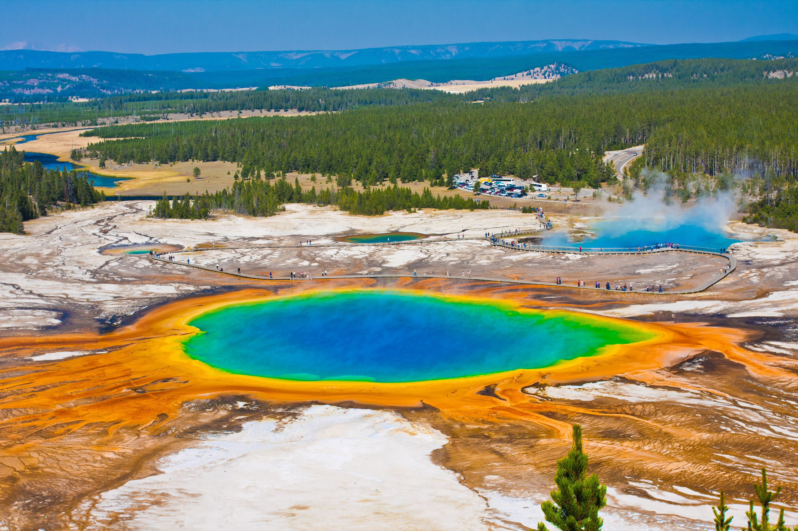

Explore Your Favorite National Parks
The work is done by Yaohan Xu, and the main data source is the NPS Open Data Portal.
Worldwide National Parks
A national park is a protected area designated for conservation due to its exceptional natural, historical, or cultural significance at the national level. It may consist of natural, semi-natural, or developed land that is owned and managed by the government.
The International Union for Conservation of Nature defines national parks, and over 150 countries around the world have designated such lands. Globally, there are more than 3,100 national parks, with Australia having the most, totaling 685. However, the United States is home to the world's first national park. The following slide will continue to explore the national parks in the United States.
The information is based on Wikipedia.
National Parks in the USA
The 431 units of the National Park System are often broadly referred to as national parks, although most of them have other formal designations. Strictly speaking, the United States has 63 national parks, which are congressionally designated protected areas managed by the National Park Service, a division of the Department of the Interior.
The first national park, Yellowstone, was established when President Ulysses S. Grant signed a bill into law in 1872. This was followed by Mackinac National Park in 1875 (later decommissioned in 1895), and then Rock Creek Park (which was later incorporated into the National Capital Parks), Sequoia, and Yosemite in 1890. The national parks set a record in 2021, attracting more than 92 million visitors.
The information is based on Wikipedia.
Yellowstone National Park
Yellowstone National Park is a national park in the United States, primarily located in the northwest corner of Wyoming, extending into Montana and Idaho. It spans an area of 8,983 square kilometers, featuring lakes, canyons, rivers, and mountain ranges. Yellowstone Lake, one of the largest high-elevation lakes in North America, is situated over the Yellowstone Caldera, the continent's largest supervolcano. The park was established by the 42nd U.S. Congress through the Yellowstone National Park Protection Act, signed into law by President Ulysses S. Grant on March 1, 1872.
Yellowstone has over 1,449 kilometers of hiking trails, most of which are managed as wilderness areas. Many of the park's trails are located at altitudes above 2,100 meters, so snow often persists until late May or early June. In some areas, especially mountain passes, snow can remain until late July. As a result, many trails require crossing cold and potentially hazardous rivers. Be sure to check the Backcountry Conditions page for the latest trail information.
The information is based on Wikipedia.

Visitor Centers in Yellowstone
There are eight main visitor centers, seven of which are located inside Yellowstone National Park, with the eighth situated in West Yellowstone, Montana, near the West Entrance. Each visitor center has its own unique features, often combined with exhibitions, entertainment, or recreational activities. For specific details on opening hours and locations, visitors can check the official website.
The information is based on Yellowstone National Park Trips website.
Old Faithful Visitor Education Center
The Old Faithful Visitor Education Center was designed to blend with its natural surroundings and is a LEED-certified building. Located near the Old Faithful Geyser, visitors can watch geyser eruptions from this center. The exhibits here focus on Yellowstone's hydrothermal features, including geysers, hot springs, mudpots, and fumaroles. In addition, visitors can gather park information, speak with park rangers, shop for souvenirs at the gift shop, explore the park's natural wonders in the exhibit hall, participate in ranger-led activities, or use the available restrooms. You can visit the official website for more Information.
The information is based on National Park Service website.